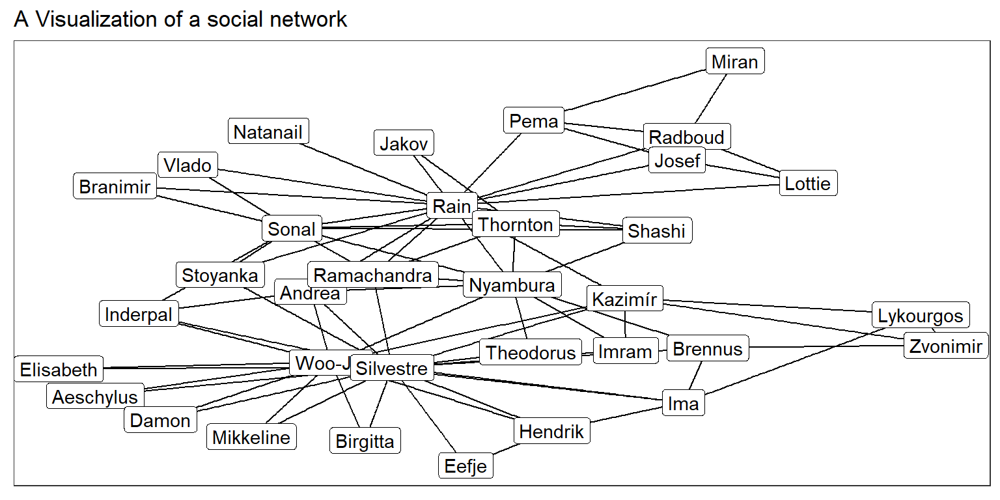
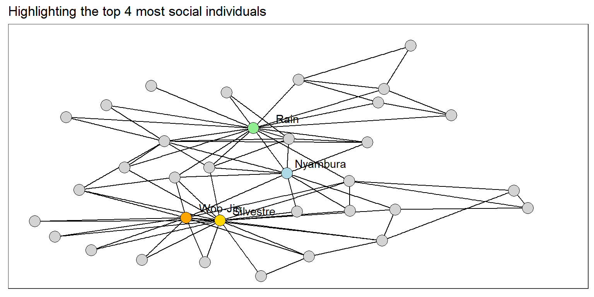
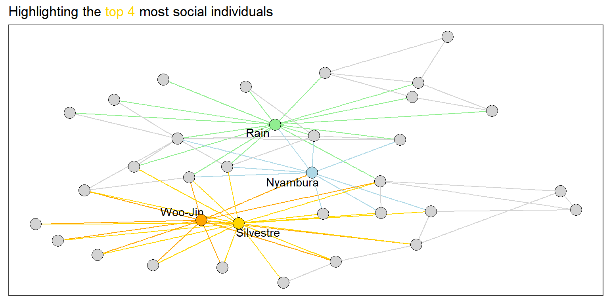
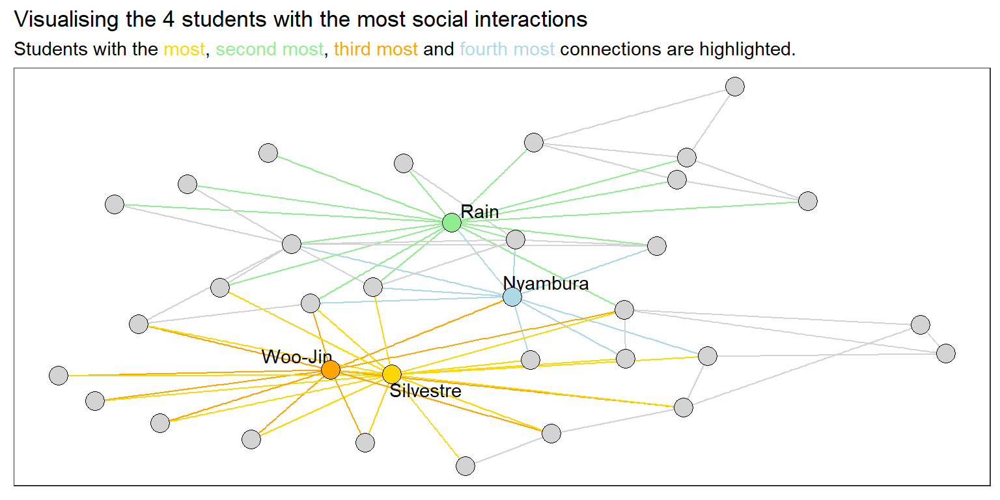

library(readxl)
library(dplyr)
library(tidygraph)
library(ggplot2)
library(ggraph)
library(ggthemes)
theme_set(theme_bw())
df_edges <- read_excel("data/network_data.xlsx", sheet = "edges")
df_nodes <- read_excel("data/network_data.xlsx", sheet = "nodes")
twiddle_data <- tbl_graph(
nodes = df_nodes,
edges = df_edges
)
ggraph(twiddle_data, layout = "igraph", algorithm = "kk") +
geom_edge_link() +
geom_node_label(mapping = aes(label = name)) +
labs(
title = "A Visualization of a social network"
)Applied Data Science: Communication and Visualisation - Project 1.2
Introduction
As part of the Applied Data Science: Communication and Visualisation course for the Certificate of Open Studies (COS) of the EPFL, the students show their acquired skills in small data science projects. This Markdown file is about the analysis of network data set.
Analysing the data
Task 1: Loading the data and inspecting a first graph
Firstly, we load the data using the {readr} package. We make an initial data-wrangling in order to bring it in a useful format for network analysis
Task 2: Displaying only Firstnames
library(stringr)
df_nodes_firstname <- df_nodes %>%
mutate(firstname = word(name, 1))
twiddle_data_firstname <- tbl_graph(
nodes = df_nodes_firstname,
edges = df_edges
)
ggraph(twiddle_data_firstname, layout = "igraph", algorithm = "kk") +
geom_edge_link() +
geom_node_label(mapping = aes(label = firstname)) +
labs(
title = "A Visualization of a social network"
)
Task 4: Only showing names of 4 most interactive people
ggraph(twiddle_data_firstname_counts,
layout = "igraph",
algorithm = "kk") +
geom_edge_link() +
geom_node_text(
mapping = aes(label = ifelse(top_4, firstname, ""), # show only top 4
fill = top_4),
nudge_y = 0.28,
nudge_x = 0.28,
) +
geom_node_point(mapping = aes(fill = fill_color),
shape = 21,
size = 5) +
labs(title = "Highlighting the top 4 most social individuals") +
scale_fill_identity() +
theme(plot.title = element_markdown(),
legend.position = "none")Warning in geom_node_text(mapping = aes(label = ifelse(top_4, firstname, :
Ignoring unknown aesthetics: fill
Task 5: Coloring the graph a little more
We want each of the top 4 social people to have their own color. Next, we color the connections accordting to their color.
top_4_list <- df_nodes_firstname_counts %>%
filter(top_4) %>%
select(id, rn, fill_color)
twiddle_data_colored <- twiddle_data_firstname_counts %>%
activate(edges) %>%
mutate(
edge_color = case_when( # see Issue 17 for explanation on github.
from %in% top_4_list$id & to %in% top_4_list$id ~ from_fill_color,
from %in% top_4_list$id ~ from_fill_color,
to %in% top_4_list$id ~ to_fill_color,
TRUE ~ "lightgrey"
)
)
gg <- ggraph(twiddle_data_colored,
layout = "igraph",
algorithm = "kk") +
geom_edge_link(mapping = aes(color = edge_color)) +
geom_node_text(
mapping = aes(label = ifelse(top_4, firstname, "")),
# nudge_y = 0.28,
# nudge_x = 0.28,
repel = TRUE
) +
geom_node_point(mapping = aes(fill = fill_color),
shape = 21,
size = 5) +
labs(title = "Highlighting the <span style='color:gold'>top 4</span> most social individuals") +
scale_fill_identity() +
scale_edge_color_identity() +
theme(plot.title = element_markdown())
gg
Task 6: Making the plot self-explasnatory
gg_polished <- gg +
labs(title = "Visualising the 4 students with the most social interactions",
subtitle = "Students with the <span style='color:gold'>most</span>, <span style='color:lightgreen'>second most</span>, <span style='color:orange'>third most</span> and <span style='color:lightblue'>fourth most</span> connections are highlighted.") +
theme(plot.subtitle = element_markdown())
gg_polished